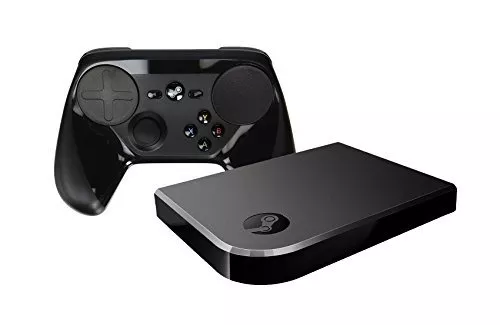
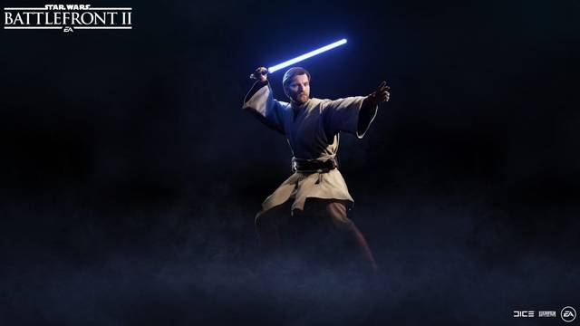
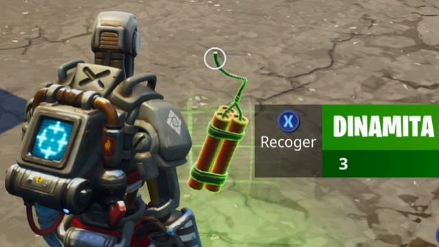

¡ Noticias !
Parece que el Steam Link dejará de producirse.

¿Estás interesado en un Steam Link y todavía no lo compras?
Tenemos que informarte que vas a querer apresurarte en hacerlo. Esto es así ya que todo parece indicar que Valve lo dejará de producir.
A lo que nos referimos es que, por medio de una publicación en los foros de Steam, Valve informó que sólo hay pocas unidades del Steam Link disponibles en Estados Unidos. Asimismo, reveló que ya se terminaron en Europa y en ningún momento mostró interés en producir más. Así pues, si bien no lo dijo directamente, muchos han visto esto como una señal de que no se producirán más unidades del Steam Link.
Ahora bien, hay que mencionar que lo anterior no significa que Valve vaya a abandonar su producto. A lo que nos referimos es que la compañía se mostró comprometida con la misión de entregarle soporte.
“Los suministros del hardware físico de Steam Link se agotaron en Europa y está a punto de terminarse en Estados Unidos. Para el futuro, Valve pretende seguir dando soporte al hardware existente y a la distribución de versiones de software del Steam Link”, mencionó Valve.
Pero, ¿por cuál es la razón por la que Valve dejará de producir este hardware? La compañía no hizo ningún comentario al respecto. Dicho esto, en los últimos meses la tecnología de Steam Link ha llegado a televisores y dispositivos móviles. Así pues, es probable que la nueva estrategia de Valve sea enfocarse en ofrecerlo en aparatos que ya tiene la gente. Dicho esto, lo último no es nada más que una conjetura de nuestra parte.
Y tú, ¿ya tienes un Steam Link? ¿Estás interesado en comprar uno? Cuéntanos en los comentarios.
Por si no lo sabes, Steam Link es una caja de streaming que salió a la venta en 2015. Al igual que el Steam Controller, se trata de un dispositivo que formó parte de la iniciativa de Valve de llevar el PC Gaming a la sala de estar. En otras palabras, es un dispositivo que te permite jugar tus títulos para Steam en cualquier televisor sin tener que mover tu computadora.
Recuerda que aquí encontrarás más noticias relacionadas con Steam.
Battlefront II recibirá a Obi-Wan Kenobi y Geonosis
el 28 de noviembre

EA y DICE han anunciado a través de
su web oficial la fecha de lanzamiento de la próxima gran actualización que llegará a
Star Wars Battlefront II. Se trata del esperado contenido que incluirá al general Obi-Wan Kenobi como personaje seleccionable, así como incorporará el planeta Geonosis al Asalto galáctico. Ambos contenidos llegarán el 28 de noviembre en una actualización gratuita, como todas las del juego.
Desde el próximo 28 de noviembre, los jugadores de Star Wars Battlefront II podrán encarnar al Jedi Obi-Wan Kenobi, que aparecerá en el videojuego con el aspecto de La Venganza de los Sith. El personaje estrenará su apariencia como Jedi Master, sin capucha, estando esta última disponible para su compra con créditos del juego. Según ha confirmado DICE, el Jedi tendrá un skin catalogado como General Kenobi, que estará disponible más tarde y que podría estrenar la famosa armadura de soldado clon.
Así es la dinamita de Fortnite, nueva arma del Salvaje Oeste

Probamos la dinamita de Fortnite Battle Royale, una de las nuevas armas incluidas en el juego mediante uno de sus últimos parches de la Temporada 6.
El día 20 de noviembre se aplicó un parche a Fortnite que lo actualizó a su versión 6.30. El juego se encuentra aún en la Temporada 6 de su Pase de Batalla. El parche en cuestión incluyó el nuevo modo de juego Salvaje Oeste en Fortnite Battle Royale, así como una nueva arma, la dinamita. No obstante, dio bastantes problemas durante su implementación, por lo que desde Epic Games decidieron retirarla temporalmente de su Battle Royale. Una vez de vuelta en el juego, os contamos qué nos parece esta nueva arma.